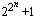

|
Have you ever looked at the list of largest known primes? The most obvious feature of the largest few thousand primes p is that in almost every case either p-1 or p+1 is trivially factored. Why is that? Because these are the numbers easiest to prove prime! In this section we will show how we can use Fermat like tests for n if we know enough factors of n-1. These are tests that prove primality, they do not just suggest that primality is (however highly) probably.
In 1891 Lucas turned Fermat's Little Theorem into a practical primality test. Here is Lucas' test as strengthened by Kraitchik and Lehmer (see [BLS75]):
Theorem 1: Let n > 1. If for every prime factor q of n-1 there is an integer a such thatthen n is prime.
- an-1 ≡ 1 (mod n), and
- a(n-1)/q is not 1 (mod n);
We will prove this theorem because we have a great deal to learn from it. (If you lose your way here, then just move on to the next theorem--since in this case you must be taking me at my word anyway.)
Proof: To show n is prime we need only show phi(n) = n-1 (here phi(n) is Euler totient function), or more simply, that n-1 divides phi(n). Suppose this is not the case, then there is a prime q and exponent r>0 such that qr divides n-1, but not phi(n). For this prime q we must have an integer a that satisfies the conditions above. Now let m be the order of a modulo n, then m divides n-1 (first condition), but not (n-1)/q (second condition). So qr divides m which divides phi(n)--a contradiction which proves the theorem.
What did we do in this proof? We looked at a group, (Z/nZ)*, which, if it had the correct size, n-1, would show n was prime. We then collected enough information (the two conditions) to show the group had the correct size! This is the basis of all modern primality tests whether they are as simple as the test above or something as elaborate such as the methods using elliptic curves or number fields.
Theorem 1 requires a complete factorization of n-1. The key to strengthening this result into a form that only requires the factored part of n-1 to be roughly the square root of n-1 was discovered by Pocklington:
Pocklington's Theorem (1914): Let n-1 = qkR where q is a prime which does not divide R. If there is an integer a such that an-1 ≡ 1 (mod n) and gcd(a(n-1)/q-1,n) = 1, then each prime factor p of n has the form qkr+1.
Proof. Let p be any prime divisor of n, and let m be the order of a modulo p. As above m divides n-1 (first condition on a), but not (n-1)/q (second condition); so qk divides m. Of course m divides p-1 so the conclusion follows.
The result of applying Pocklington's theorem to each prime power factor of n (plus a little more work) is:
Theorem 2: Suppose n-1 = FR, where F>R, gcd(F,R) is one and the factorization of F is known. If for every prime factor q of F there is an integer a>1 such thatthen n is prime.
- an-1 ≡ 1 (mod n), and
- gcd(a(n-1)/q-1,n) = 1;
(Notice that different a's can be used for each prime q.) Theorem 2 can be improved even more: if F<R, but either every factor of R is greater than sqrt(R/F); or n<2F3, R=rF+s, 0<s<F, and r is odd or s2-4r is not a square; then n is prime. If you are interested in these theorems, then it is well worth going to the source: [BLS75].
Before we switch to the plus side tests, let me quote a few classical cases of theorem 2.
Pepin's Test (1877): Let Fn be the nth Fermat number (so Fn =  ) with n>1. Fn is prime if and only if 3(Fn -1)/2 ≡ -1 (mod Fn).Proof. If 3(Fn-1)/2 ≡ -1 (mod Fn), then Fn is prime by theorem 2 with a = 3. If instead Fn is prime, then 3(Fn-1)/2 ≡ (3|Fn) (mod Fn) where (3|Fn) is the Jacobi symbol. It is easy to check that (3|Fn) = -1.
Proth's Theorem (1878): Let n = h.2k+1 with 2k > h. If there is an integer a such that a(n-1)/2 ≡ -1 (mod n), then n is prime.
Theorem 3 ("Well Known"): Let n = h.qk+1 with q prime and qk > h. If there is an integer a such that an-1 ≡ 1 (mod n), and gcd(a(n-1)/q-1,n) = 1, then n is prime.
Perhaps the best single source source of information on the classical tests is Hugh Williams book "Édouard Lucas and Primality Testing" [Williams98]. Other useful sources include "the" n2-1 article: [BLS75], and the standard surveys (such as [BLSTW88], [Ribenboim95] and [Riesel94]). These surveys include pointers to the results which use the factorization of other polynomials in n such as n6-1, most developed by Williams and his associates [Williams78, Williams98].
These theorems have been implemented and are available for you to use on most
computer platforms. For example, look at Jean Penné's LLR
and Chris Nash's PrimeForm).
|